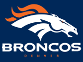

Orange Fever
story of how I became a Bronco fan
| Faded image | Solid image |
|---|---|
 |
It began years ago as a freshman at the University of Colorado. I was housed at the dorms at Stearns East, an east campus building nestled in the off-campus housing complex known as Williams Village. There I soon became friends with a guy from Chico, California by the name of Erin. We began immediately to relate in our mutual passion for football. I was from Lincoln, Nebraska home of the then champion Huskers, a college team built on years of a tradition of excellence. Growing up there I was raised to love college football. Although I was too small in stature to compete at any level I was an avid fan of the sport. Most intriguing to me was how the sport could bring together communities to form an inseparable bond.
Erin and I began to share about our mutual passion for the sport and he began to praise the likes of this former Stanford graduate well known in the football fanbase named John Elway. For years he struggled at attaining the sport's greatest achievement - the Lombardi trophy. That fall in the dorm rooms of Stearns East Erin and I passionately followed Elway's season and his team's pursuit of dominance throughout the NFL. It all culminated with a matchup for the Superbowl against heavily favored Brett Favre and the Green Bay Packers. Erin and I gathered some friends together and settled into an late afternoon at the Darkhorse Bar just down the street from Williams Village. The game was nothing short of dramatic and culminated in a dominant performance by the running game of the Denver Broncos with Terrell Davis winning the MVP honors and leading the Broncos to victory in what would become the first of back-to-back SuperBowl wins for the Denver Broncos team and the fanbase known declaratively as Bronco nation.
After those years I was inflicted with what is known as Orange fever, a serious infection of the bloodstream that causes great
levels of anxiety every time the team plays. That anxiety ebbs and wanes with each passing moment of the sixty minutes the team
battles towards victory or defeat. With each catch. run, fumble, or interception the anxiety can heighten and fall. However, as much
as I wanted the fever to subside I have come to accept that I will forever carry this infection for the rest of my life.
Sunday February 7, 2016 found my team and the fever once again in rabid action as the Broncos were once again destined for a final
battle against a highly favored opponent on the biggest stage sports has come to offer. It was that night in Levi's Stadium in the Bay Area of
San Francisco that the golden anniversary of the greatest football competition in American history culminated in a victory for the Denver Broncos.
That victory allowed Bronco nation the opportunity after 18 years of waiting to celebrate the acquisition of their third Lombardi Trophy